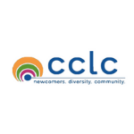

About Us
We're excited to serve you.
The Ivey MSc Pro Bono Analytics and Strategy Collective (Ivey PBASCO), formerly the Ivey Pro Bono Analytics Club, was created to enable students in the MSc’s International Business, Business Analytics, and Digital Management streams to provide free consulting, strategy and analytics services to small businesses and non-profit organizations predominantly in London Ontario.
As well as having a positive impact on the community, we hold the development of our club members in high regard. We bridge the gap within the MSc program by providing an experiential learning environment that allows students to develop their professional skillset while connecting with the broader community.

Analytics
The diverse educational backgrounds of our analysts equip them to help project partners identify and capture the most value and meaningful insights from data, and turn them into competitive advantages.
Strategy
We work with our project partners from the different sectors to identify their highest-value opportunities, address their most critical challenges, and transform their enterprises.
As a student-run clinic that provides business strategy and analytics support to small businesses and non-profit organizations, fostering a relationship among Ivey students and the immediate London community is one of our values.
By collaborating internally and externally, we create purposeful connections with professors, student associations and program services, thereby establishing a sustainable organizational model and culture that will support our community for years to come.
By identifying the organization's needs and applying data analysis to a real organization's issue, our team helps clients ensure no value is left on the table. Our culture is one of giving back.
Our club encourages membership learning by offering unique and informative professional development events throughout the year. With an emphasis on hands-on learning and real-world solutions, we are often joined by professionals from different fields that provide valuable insights into navigating careers in data analytics & strategy.
Reviews
Satisfaction Guaranteed.
-

The London Cross Cultural Learner Centre benefited greatly from engaging the Pro Bono Analytics Club. Ivey graduate students asked the right questions, provided actionable insights, and delivered beyond expectations on a very short project timeline. Their deliverables are making a real impact on our journey to implement business analytics to better manage our organisation’s multiple programs, and to ultimately better serve our clients with the resources we have. I was impressed by the depth of their analysis, the quality of presentations, and their real world business problem solving ability. I strongly recommend the Pro Bono Analytics Club.
London Cross Cultural Learner Centre (Project Partner)
-
Eldon House staff were excited to work with the Ivey Pro Bono Analytics Club. The students were able to conduct through and comprehensive research and put together presentations and information that applied directly to us as a not-for-profit. Their suggestions on our donation model have helped us adjust to attract more donations from our visitors online and in-person. Thank you so much to the Club for your stellar work!
Eldon House (Project Partner)
-
Being a smaller non-profit, oftentimes our team of volunteers is restricted to focusing on the key day-to-day tasks that keep our organization moving. Working with the students assigned to us through the Pro Bono Analytics Club was a big boon to GMAT Mentors, as they were able to provide assistance in helping our organization tackle some of the bigger-picture things that often slip through the cracks for us. The Pro Bono team enabled us as an organization to size-up our current operations and data systems, hone-in on the challenges related to them, and ultimately provided a specific, value-add recommendation on how to address these challenges. In our experience, the working team was also a professional group of students that stayed on top of managing the engagement and moving things forward. GMAT Mentors is looking forward to continuing as a partner with the Pro Bono Club in the months to come as we work to implement their recommendation.
GMAT Mentors (Project Partner)
-
PBAC case competition has helped me in reflecting over Kalahut’s pain points and planning for a structured marketing strategy. Students have brought forward some really cool strategies to expand in the international markets which we plan to implement in the coming days.
Kalahut: The House of Arts (Project Partner)
-
This past term, Ivey Business School desired to renew and invigorate its focus on the core values of Equity, Diversity and Inclusion. A key component of this process was trying to understand the issues our community faced and the opportunities that might exist. The MSCA and MSc Program Services Team reached out to our newest Ivey MSc club, the Pro bono Analytics Club (PBAC). Given their collective strength in harnessing, analyzing, and interpreting large pools of unstructured data, we asked if they could explore the Ivey social media to see what insights it held. The net result was a robust, rich, and well-structured analysis of EDI at Ivey, developed and framed using data analytics best practice and tools. There work and insights have been invaluable in guiding the MSc Program office and our partners towards the goal of defining our priorities for enhancing EDI at Ivey. Hats off to excellent work by the team of Vu, Paul, and Mike!
Ivey’s Program Services and MSc Student Association
-
From this experience, I have been able to identify the needs of the organization and apply data-analysis to a real organization's issue. I am working to analyze the previous data collected by the centre on its participants and programs offered. Afterwards, my team and I are working towards providing next steps and recommendations in how to improve and optimize the current data collection process for it to be applied in the future, in addition to providing insights on what programs are doing well and what areas can be improved on.
Mubasshira Khalid (Analyst)
-
The whole experience has been very rewarding, and it feels great to have added value to a community organization. This club is a great way to meet other analysts with similar interests and provides an opportunity to make a real impact!
Niara Sareen (Analyst)